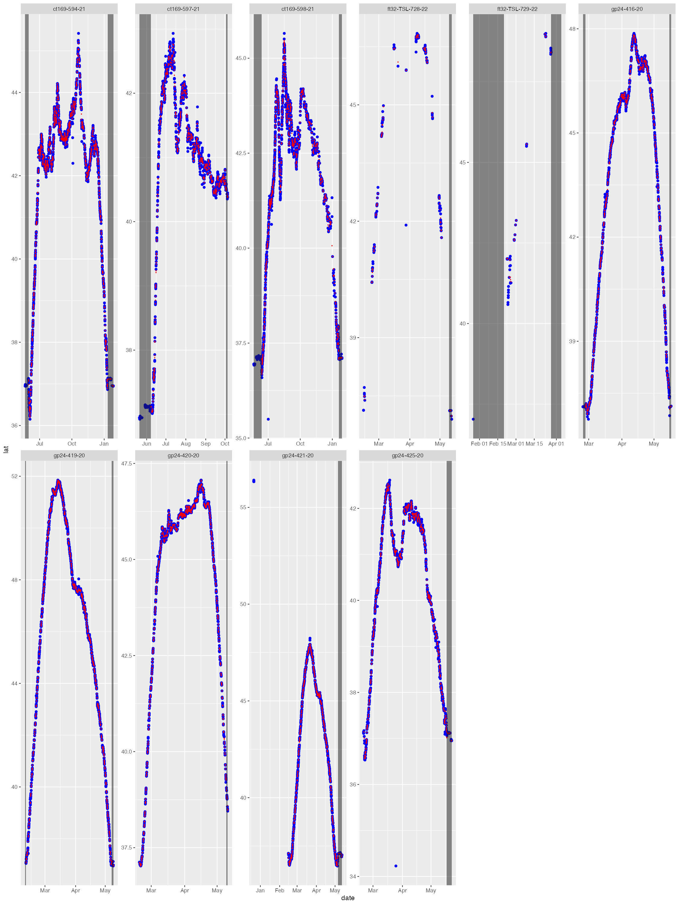
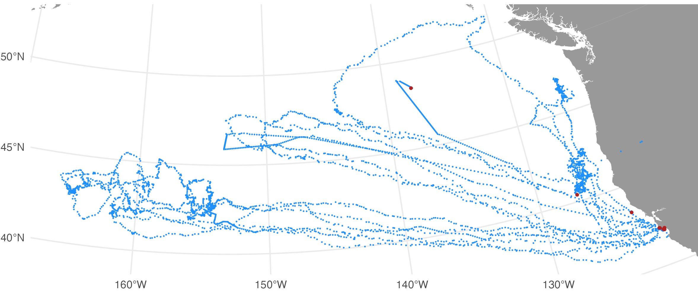

ArgosQC provides automated workflows for quality
controlling Argos & GPS (when present) locations obtained from
either SMRU SRDL or Wildlife Computers animal telemetry tags. Workflows
currently are set up for IMOS and ATN tagging data. The general workflow
for SMRU tags is documented in Jonsen
et al. 2024. The workflow for Wildlife Computers tags is analogous,
with differences due to the various tag data structures.
Several automated QC workflows have been set up for SMRU SRDL-CTD
(and related) tags, and for Wildlife Computers SPOT, SPLASH and SCOUT
tags. The workflows are specific to IMOS - AODN and ATN metadata and QC
output data structure requirements. The following QC workflows can be
implement from a single ArgosQC function & a required
config JSON file, with output written to .CSV files in a user-specified
directory:
| Workflow | Function |
|---|---|
| IMOS - AODN SMRU SRDL-CTD (and related) tags | smru_qc() |
| ATN SMRU SRDL-CTD (and related) tags | smru_qc() |
| ATN Wildlife Computers SPOT, SPLASH, and SCOUT tags | atn_wc_qc() |
These single function workflows simplify the automated QC
implementation. Additional workflows will be added as required to
accommodate additional tag manufacturers and/or tag data structures, as
well as organisational metadata and output data formatting requirements.
The QC workflows can also be implemented by calling individual
ArgosQC functions in series as required. This latter
approach allows greater flexibility as intermediate & final output
data and metadata can be re-structured as needed. The single function
SMRU tag QC & ATN Wildlife Computers tag workflows are highlighted
below.
The first step to initiate any ArgosQC workflow is to construct a
JSON config file. The file is hierarchical in structure with as many as
4 blocks: setup, harvest, model,
and meta. The meta block is only required if
no metadata file is provided in the setup block. These
files can be constructed manually or programmatically and provide the
ability to define certain aspects of the QC workflow. Below is the
config file for an IMOS QC workflow on SMRU GPS SRDL-CTD tags deployed
on olive ridley turtles on the Tiwi Islands, Australia.
setup config block specifies the program overseeing data
assembly & paths to required data, metadata & output
directories:
program the national (or other) program of which the data
is a part. Current options are: imos, atn, or
otn.
data.dir the name of the data directory. Must reside within
the wd.
meta.file the metadata filename. Must reside within the
wd. Can be NULL, in which case, the meta
config block (see below) must be present & tag-specific metadata are
scraped from the SMRU data server.
maps.dir the directory path to write diagnostic maps of
QC’d tracks.
diag.dir the directory path to write diagnostic time-series
plots of QC’d lon & lat.
output.dir the directory path to write QC output CSV files.
Must reside within the wd.
return.R a logical indicating whether the function should
return a list of QC-generated, internal R objects. This results in a
single large object returned to the R work space containing the
following elements:
cid the SMRU campaign ID
dropIDs the SMRU Reference ID’s dropped from the QC process
smru the SMRU tag data tables extracted from the downloaded
.mdb file
meta the working metadata
locs_sf the projected location data to be passed as input
to the SSM
fit1 the initial SSM output fit object
fit2 the final SSM output fit object including re-routed
locations if specified.
smru_ssm the SSM-annotated SMRU tag data tables. This
output object can be useful for troubleshooting undesirable results
during delayed-mode (supervised) QC workflows.harvest config block specifies data harvesting parameters:
download a logical indicating whether tag data are to be
downloaded from the SMRU data server or read from the local
data.dir.
cid SMRU campaign ID.
smru.usr SMRU data server username as a string.
smru.pwd SMRU data server password as a string.
timeout extends the download timeout period a specified
number of seconds for slower internet connections.
dropIDs the SMRU ref ID’s that are to be ignored during the
QC process. Can be NULL.
p2mdbtools (optional) provides the path to the mdbtools
library if it is installed in a non-standard location (e.g., on Macs
when installed via Homebrew).model config block specifies model- and data-specific
parameters:
model the aniMotum SSM model to be used for the location QC
- typically either rw or crw.
vmax for SSM fitting; max travel rate (m/s) to identify
implausible locations
time.step the prediction interval (in decimal hours) to be
used by the SSM
proj the proj4string to be used for the location data &
for the SSM-estimated locations. Can be NULL, which will result in one
of 5 projections being used, depending on whether the centroid of the
observed latitudes lies in N or S polar regions, temperate or equatorial
regions, or if tracks straddle (or lie close to) -180,180 longitude.
reroute a logical; whether QC’d tracks should be re-routed
off of land (default is FALSE). Note, in some circumstances this can
substantially increase processing time. Default land polygon data are
sourced from the ropensci/rnaturalearthhires R package.
dist the distance in km from outside the convex hull of
observed locations from which to select land polygon data for
re-routing. Ignored if reroute = FALSE.
buffer the distance in km to buffer rerouted locations from
the coastline. Ignored if reroute = FALSE.
centroids whether centroids are to be included in the
visibility graph mesh used by the rerouting algorithm. See
?pathroutr::prt_visgraph for details. Ignored if
reroute = FALSE.
cut logical; should predicted locations be dropped if they
lie within in a large data gap (default is FALSE).
min.gap the minimum data gap duration (h) to be used for
cutting predicted locations (default is 72 h)
QCmode one of either nrt for Near Real-Time QC
or dm for Delayed Mode QC.
meta config block specifies species and deployment location
information. This config block is only necessary when no metadata file
is provided in the setup block.
common_name the species common name (e.g., “southern
elephant seal”)
species the species scientific name (e.g., “Mirounga
leonina”)
release_site the location where tags were deployed (e.g.,
“Iles Kerguelen”)
state_country the country/territory name (e.g., “French
Overseas Territory”)
With a completed config file, the standard call within R is:
smru_qc(wd = "test", config = "imos_config.json")where wd is the file path for the working directory
within which all QC data/metadata inputs are downloaded (or read) and
outputs are written.
The proj argument specifies the projection (as a
proj4string) to which the tag-measured locations are
converted as input to the QC state-space model (SSM), ie. the working
projection in km for the SSM. Any valid
proj4string may be used, provided the units are in
km. If proj is left as NULL then
the QC algorithm will project the data differently depending on the
centroid latitude of the tracks. The default projections are:
| Central Latitude or Longitude | Projection (with +units=km) |
|---|---|
| -55 to -25 or 25 to 55 Lat | Equidistant Conic with standard parallels at the tracks’ 25th & 75 percentile Latitudes |
| < -55 or > 55 Lat | Stereographic with origin at the tracks’ centroid |
| -25 to 25 Lat | Mercator with origin at the tracks’ centroid |
| -25 to 25 Lat & Long straddles -180,180 | Longitudes are shifted to 0, 360 and a Mercator with origin at tracks’ centroid |
The model argument specifies the aniMotum
SSM to be used; typically either rw or crw.
The latter is usually less biased when data gaps are absent, the former
is best when data gaps are present. A general recommendation is to use
model:rw as the SSM for unsupervised (e.g.,
NRT) QC workflows. The SSM fitting algorithm has a few fundamental
parameters that need to be specified; vmax is the animals’
maximum plausible travel rate in
ms.
For example, vmax:3 is usually appropriate for
seals and vmax:2 for turtles. The SSM
prediction interval in hours is specified with time.step.
Decimal hours can be used for time.steps shorter than 1 hr.
This time interval determines the temporal resolution of the predicted
track. The predicted track locations provide the basis for interpolation
to the time of each tag-measured ocean observation or behavioural event.
Typically, 6 hours is appropriate for most Argos data collected from
seals and turtles but a finer time interval may be required for faster
moving species and/or more frequently measured ocean observations, and a
coarser interval for more sporadically observed locations. Further
details on SSM fitting to Argos and GPS data are provided in the
associated R package aniMotum vignettes and
in Jonsen
et al. 2023.
When animals pass close to land some SSM-predicted locations may
implausibly lie on land. Often, this is due to the spatial and temporal
resolution of the Argos tracking data. In these cases, SSM-predicted
locations can be adjusted minimally off of land by setting
reroute:true. The pathroutr R
package is used for efficient rerouting. In this case, additional
arguments should be specified:
dist - the distance in km beyond track locations from
which coastline polygon data should be sampled (smaller provides less
information for path re-routing, greater increase computation time)
buffer - the distance in km to buffer rerouted locations
from the coastline
centroid- whether to include the visibility graph
centroids for greater resolution
SSM-predicted tracks can be cut
(cut:true) in regions where large location
data gaps exist. These location data gaps can occur when the tags are
unable to transmit for extended periods or when animal surfacing occurs
during periods of Argos satellite unavailability (more common closer to
the equator than at higher latitudes). In this case,
min.gap is used to specify the minimum data gap duration
(h) from which to cut SSM-predicted locations. This will limit
interpolation artefacts due to implausible SSM-predicted locations in
excessively long data gap periods.
The QCmode sets whether the QC is being conducted in
delayed-mode dm or near real-time nrt.
Delayed-mode is reserved for when tag deployments have ended and usually
involve greater user intervention; such as making decisions on removing
aberrant portions of a deployment (e.g., as tag batteries begin
failing). The nrt mode is mean to be fully automated and
only used while a deployment is active. In both cases, the output .CSV
and plot file names will include the QCmode as a
suffix.
In the above example, the main QC outputs were written to files. The QC output .CSV files were written to the specified output directory. Each .CSV file includes the name of the SMRU data table, when present (ctd, diag, dive, haulout, summary) or the QC file (metadata, ssmoutputs). For QC workflows of ATN data, each of these file names is appended with the species’ AnimalAphiaID and the ADRProjectID. For IMOS and other program data, the file names are appended with the SMRU campaign ID.
The diag files show the SSM fit (red) overlaid on the tag-measured Argos &/or GPS locations (blue). The dark grey vertical bars denote the time period tags were actively recording locations but the seal(s) had not yet gone to sea (no recorded diving activity). By default, the QC model does not fit to data in these time periods. These plots help judge whether the SSM fits have artefacts that need addressing - typically only addressed during a delayed-mode QC workflow. 
The map file shows the SSM-predicted tracks (blue) and current last estimated location (red) for each deployed tag. The map files are annotated by the QC date so they are not overwritten by successive QC runs. 
The QC’s main outputs, the .CSV files contain all records from the
original SMRU data tables and are appended with the following additional
columns: ssm_lat, ssm_lon, ssm_x,
ssm_y, ssm_x_se, ssm_y_se. These
are the QC’d locations and their uncertainty estimates interpolated to
the time of each record. The ssm_x, ssm_y
variables are the coordinates from the QC workflow projection (in km)
and ssm_x_se, ssm_y_se are the associated
standard errors (in km). Note that NA’s may be present in the
QC-appended location variables, particularly at the start and/or end of
individual tracks. This is typically indicative of track portions prior
to animals going to sea (at deployment start) and portions when either
the CTD or pressure sensor failed, eg. due to biofouling or seawater
ingress, but tag still transmitted locations (near deployment end).
The metadata file contains all the original ATN metadata records plus the following additions describing the QC workflow applied to the data:
QCStartDateTime - the track datetime (UTC) at which the
QC workflow was started.QCStopDateTime - the track datetime (UTC) at which the
QC workflow was ended.QCproj4string - the projection used for QC’ing the
locations, as a proj4string.QCMethod - denotes the ArgosQC R package
was used.QCVersion - denotes the version number of the
ArgosQC R package used.QCDateTime - the datetime (UTC) when the QC was applied
to the data.The SSMOutputs file contains the SSM-predicted locations at the
time.step specified prediction interval. The time of the
first location is set to the time of the first tag-measured location
passed to the model. This may or may not be the first tag-measured
location in the tag datafile, depending on whether the animal-borne tag
was immediately at sea. The location coordinates are provided as:
lon, lat, x, y, and
location uncertainty as x_se, y_se. The planar
coordinates and uncertainty estimates always have units in km. Their
coordinate projection is provided in the metadata .CSV file
(QCproj4string).
out <- atn_wc_qc(wd = "test",
datadir = "tagdata",
meta.file = file.path("metadata", "ATN Tag Deployment Metadata.csv"),
outdir = "wc/output",
proj = NULL,
model = "rw",
vmax = 3,
time.step = 6,
reroute = FALSE,
cut = FALSE,
QCmode = "dm",
output = TRUE,
collab.id = "...alphanumeric...",
wc.akey = "...alphanumeric...",
wc.skey = "...alphanumeric...")The arguments are similar to atn_smru_qc(), with the
addition of Wildlife Computers API identifiers: collab.id,
wc.akey, and wc.skey. These may be used to
download data directly from the Wildlife Computers Portal, in this case,
data are written to tag-specific directories within the specified
datadir directory. The collab.id argument
specifies the Wildlife Computers collaborator ID, which is required if
the user does not own or otherwise does not have direct access to the
data. Note, that data-sharing collaborations must be set up in the
Wildlife Computers Portal prior to using this tool. ArgosQC
who are Wildlife Computers data owners may access their data from the
Portal simply by providing the wc.akey and
wc.skey arguments. The wc.akey specifies the
Wildlife Computers Access Key that all Portal users must have to access
the API. The Access key is used in tandem with the wc.skey,
the Wildlife Computers Secret Key. No data downloads from the Wildlife
Computers Portal are possible without these key pairs.
Alternatively, atn_wc_qc() may be used with local copies
of Wildlife Computers tag data, provided they are stored in tag-specific
directories within the datadir directory.
The QC’s main outputs are the Wildlife Computers tag data files
appended with the same QC’d location variables as the SMRU tag QC output
files: ssm_lat, ssm_lon, ssm_x,
ssm_y, ssm_x_se, ssm_y_se. The
output .CSV files necessarily depend on the specific type of Wildlife
Computers tag(s) that is/are being QC’d. Currently, the
ArgosQC workflow accommodates SPOT, SPLASH and SCOUT tag
data. Combined across these tag types, the following output .CSV files
(per Wildlife Computers) are provided:
DSAECDHistosFastGPSHistosLocationsMinMaxDepthMixLayerPDTsSSTWhere one of these files can have a data structure that differs
between specific tag types, the file names are appended with the tag
type. For example, ECDHistos file structure differ between
SCOUT DSA and SCOUT TEMP 361A tags, so these file names appear as either
ECDHistos_SCOUT_DSA or
ECDHistos_SCOUT_TEMP_361A. Similar scenarios for other tag
types/versions will be incorporated as required in future versions of
ArgosQC.
As with the SMRU QC output files, each of the WC QC output file names
are appended with the species’ AnimalAphiaID, the ATN ADRProjectID and
the QCmode suffix - _nrt or _dm.
The metadata structure and appended QC variables are the same as
described for the SMRU QC workflow.